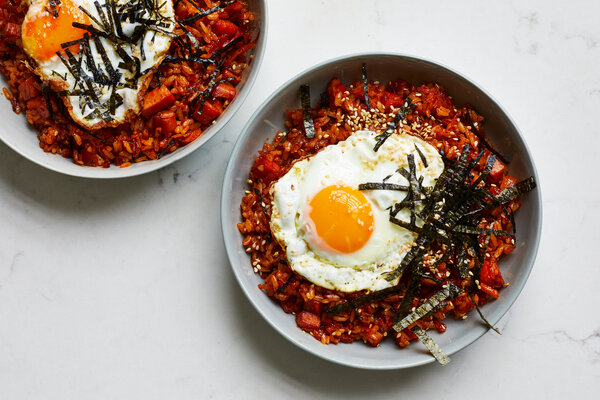

Kimchi Fried Rice

Description
Not the high-heat stir-fry you might expect, this home-style fried-rice recipe uses a simple technique — make an easy, flavorful kimchi sauce, mellowed out with butter, and sauté leftover rice in it. It's perfect for a snack or a quick, simple meal. The Spam, though optional, reflects many Koreans' love of foods introduced by the American military.
Ingredients
- 3 tablespoons unsalted butter
- 1/2 small onion, medium dice
- 1 cup roughly chopped kimchi (6 ounces)
- 2 tablespoons kimchi juice, or to taste
- 1/2 cup small-dice Spam, ham, or leftover cooked meat
- 2 cups cooked, cooled rice (preferably short-grain)
- 2 teaspoons soy sauce, or to taste
- 1 teaspoon sesame oil, or to taste
- 2 teaspoons vegetable oil
- 2 eggs
- Salt to taste
- Crumbled or slivered nori for garnish
- Sesame seeds for garnish
Instructions
- In a nonstick sauté pan or well-seasoned cast-iron skillet, melt butter over medium-low heat, and add onions. Cook, stirring, until the onions start to sizzle, about 2 minutes. Add kimchi and kimchi juice, and stir until it comes to a boil, about 3 minutes. Add Spam, and cook until sauce is nearly dried out, about 5 minutes.
- Break up the rice in the pan with a spatula, and stir it to incorporate. Turn heat to medium. Cook, stirring, until the rice has absorbed the sauce and is very hot, about 5 minutes. Stir in soy sauce and sesame oil. Taste, and adjust with more soy sauce, sesame oil or kimchi juice. Turn heat down slightly, but let the rice continue to cook, untouched, to lightly brown while you cook the eggs.
- Place a small nonstick sauté pan over medium heat, and add the vegetable oil. When it is hot, add eggs, season with salt and fry to your desired doneness. Serve rice topped with fried eggs, nori and a sprinkle of sesame seeds.